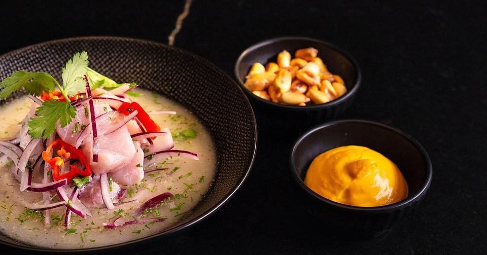
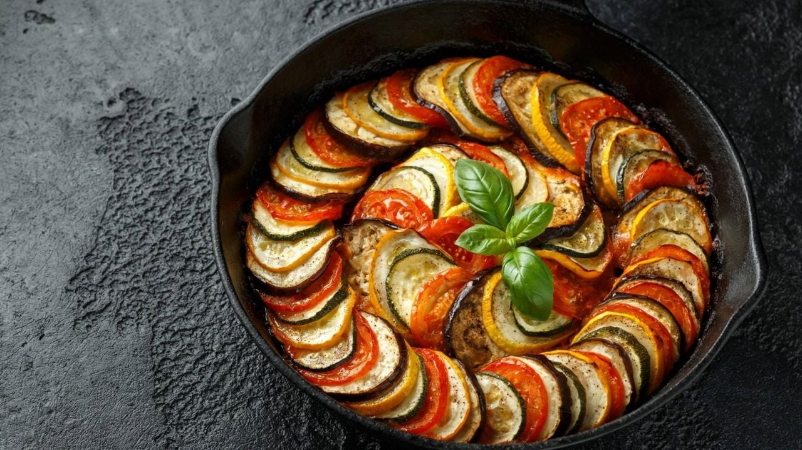
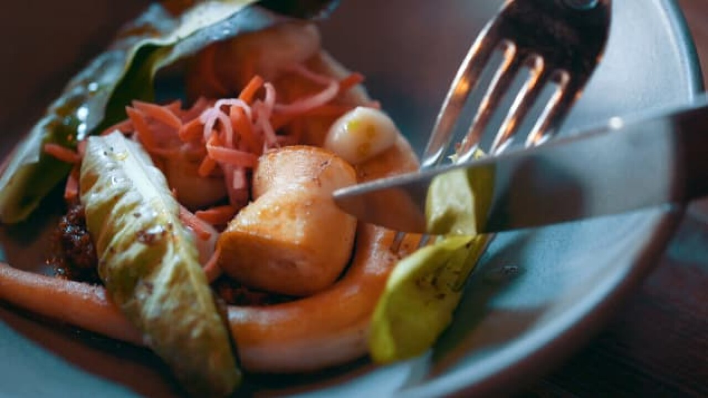
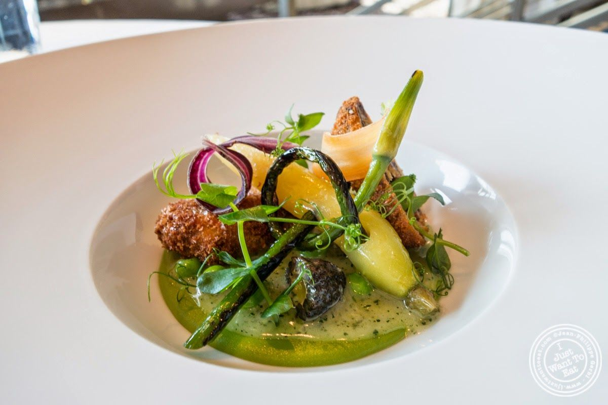

-

-

-

-

-

"No se trata de perfección, se trata de la satisfacción de haberse esforzado"
RECOMENDACIONES
dicjiwer
Author
Author
Author
Author
Sugerencias de restaurantes populares de la ciudad de La Paz, que son llamativos por su decoración y más que todo por las comidas típicas que tienen:

Sach'a Yuntas

Yati Bolivia

Mojito Bar

Los restaurantes más famosos de Thomas Keller son el French Laundry, en Yountville, California, y Per Se, en Nueva York. Ambos restaurantes han sido reconocidos con tres estrellas Michelin, la máxima distinción en la gastronomía.
Thomas Keller ha escrito varios libros de cocina, pero los más famosos son "The French Laundry Cookbook", que incluye las recetas de su famoso restaurante en California, y "Bouchon Bakery", que contiene recetas de panadería y pastelería.
El enfoque culinario de Thomas Keller se centra en la calidad de los ingredientes y en la técnica culinaria. Prefiere utilizar ingredientes de la más alta calidad y prepararlos de forma sencilla, para resaltar su sabor y textura natural.
Thomas Keller es un chef estadounidense que ha dejado su huella en la gastronomía mundial. Su enfoque en la calidad de los ingredientes y en la técnica culinaria, así como su compromiso con la formación de nuevos chefs, lo convierten en una figura importante en el mundo de la gastronomía. Sus restaurantes, libros de cocina y programas de formación son una muestra de su dedicación y pasión por la cocina, y su legado perdurará por muchos años más.